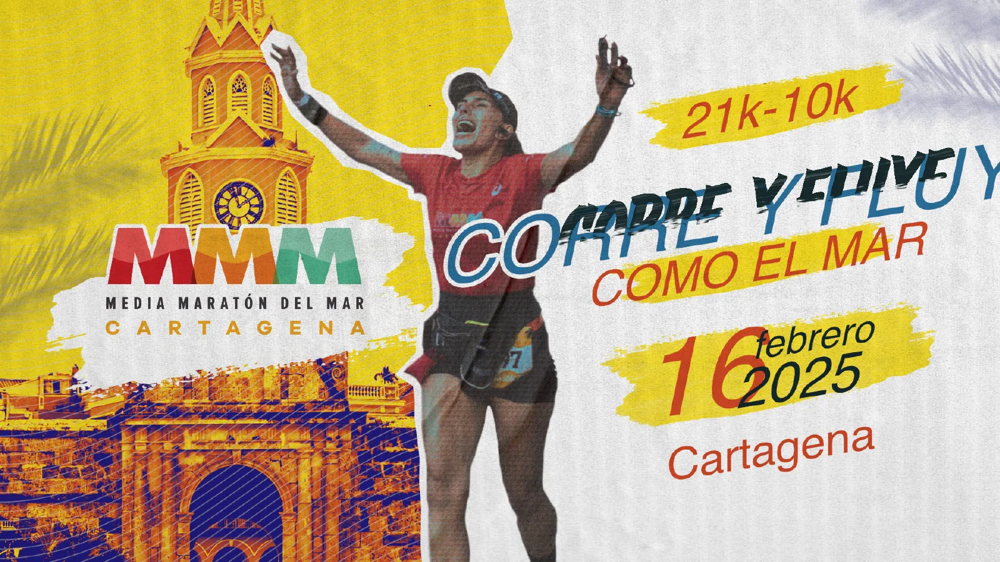
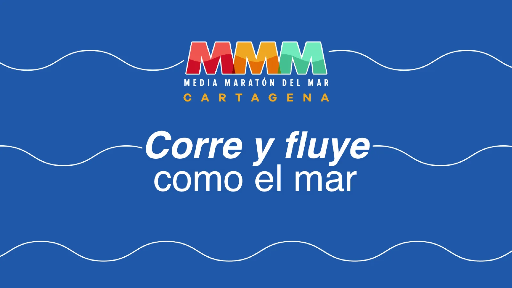
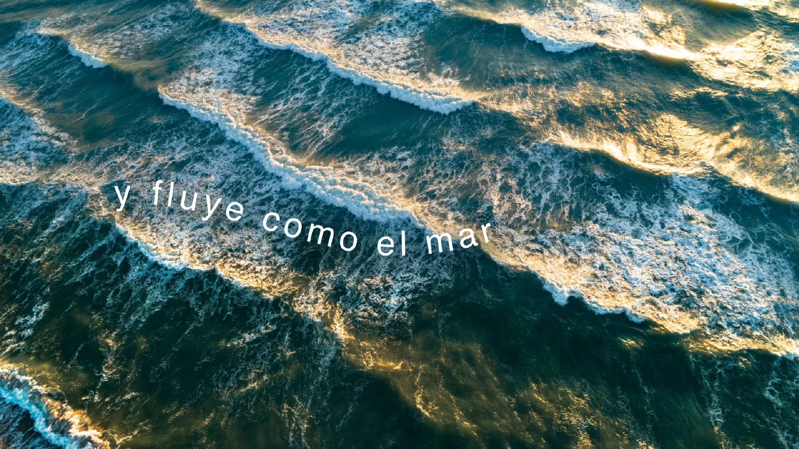
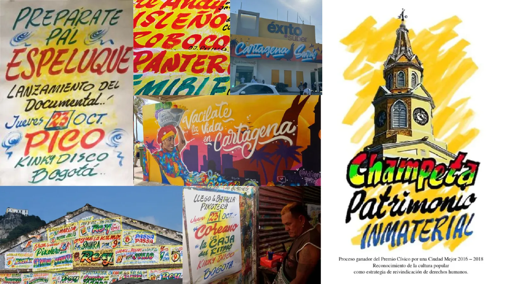
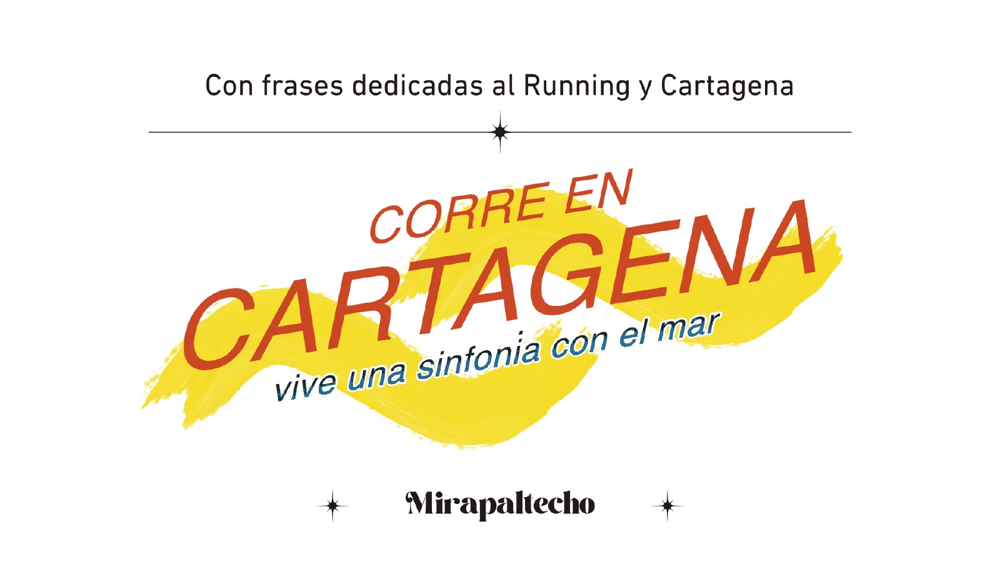
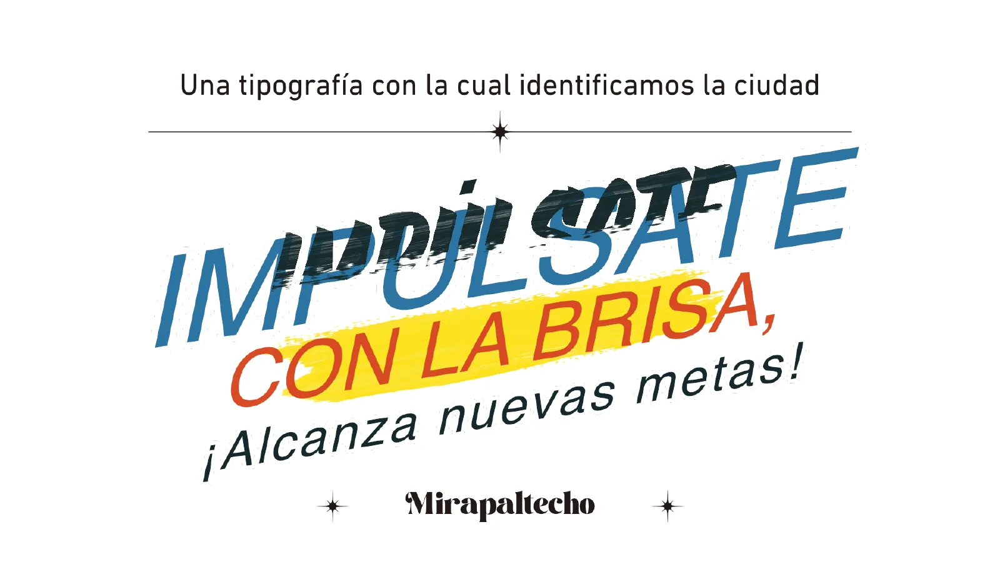
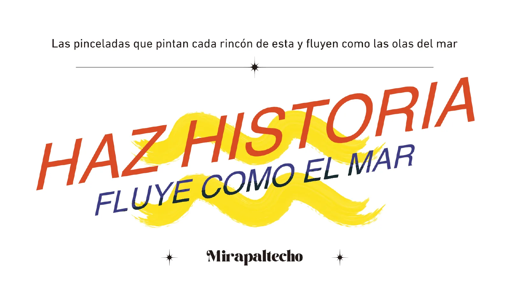
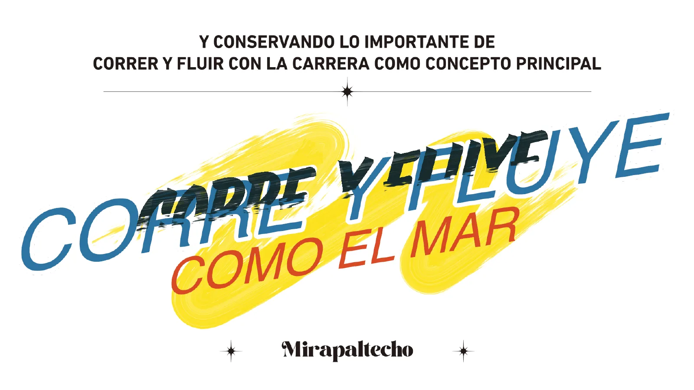
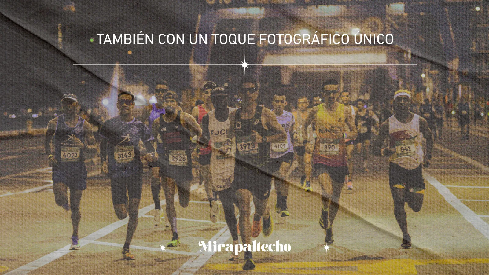
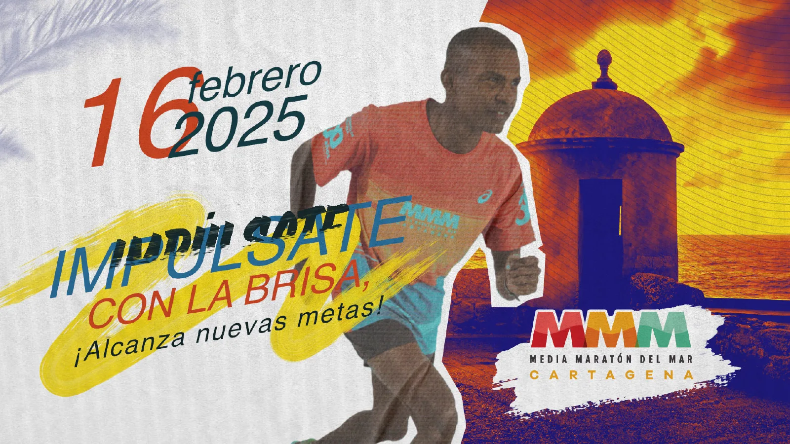

¡Con colores vivos!
- Índigo
#292488 - Rojo coral
#DA522F - Amarillo
#FCE226 - Azul mar
#32749C - Petróleo
#21383E - Verde
#458C52
Media Maratón del Mar 2025
Para la octava edición retomamos el concepto que nace del ADN de la marca y lo llevamos a una gráfica de running y ciudad: pinceladas, colores vivos y frases que suenan a Cartagena.

Salida: Sociedad Portuaria21K · 5:20 a. m.10K · 5:45 a. m.
01
Historia de campaña
Así se presentó la campaña 2025 a MCM Operador de Eventos.
Nace la Media Maratón del Mar y llega posicionándose como la carrera más importante de la ciudad.
En 2022 el desafío fue revisar la imagen y el ADN de la marca para afianzar su reconocimiento y consolidarla como la carrera más importante de Cartagena.
Retomar el concepto “Corre y fluye como el mar”: nace del ADN de la marca y puede contribuir altamente a su posicionamiento.
Conceptualizamos la nueva imagen analizando primero la ciudad: cómo se comporta gráficamente a nivel local, en sus avisos pintados a mano y su gráfica popular.



02
Sistema visual
Colores vivos, los colores de la marca, frases que giran en torno al concepto y una tipografía con la que identificamos la ciudad.
“Corre y fluye como el mar”
#292488#DA522F#FCE226#32749C#21383E#458C52#EC5C58#F1AA2C#8BC9B0#CF2930#E3732E#57B891





03
Aplicaciones
Las aplicaciones con las que se presentó la campaña: digital, kit y ciudad.
Sitio web, banner de inscripciones y feed de Instagram.
Números por distancia y bolsa del kit con el concepto.
Fachada del Centro de Convenciones, prensa, pendón, abanico y afiches.
04
Producción de evento
22 artes de producción entregados para la feria, el kit y el día de carrera.
Cenefas, backings por distancia, recorridos, transporte y paneles de información.
Bolsa del kit y avatar para redes.
Cinta de meta, faldón de tarima y podio por puesto.
05
La edición
Datos de carrera reunidos de la prensa y de los comunicados de la organización.
Salida a las 5:20 a. m. en tres corrales separados por 5 minutos. Tiempo máximo: 3 horas.
Tiempo máximo de 2 horas para completar el recorrido.
Desde la Sociedad Portuaria por la bahía, el Centro Histórico y sus calles.
Feria del corredor y carrera infantil como parte de la programación.
Quiénes corrieron53 % hombres y 47 % mujeres. Bogotá aportó el 28,2 % de los inscritos, Cartagena el 15,7 %, Medellín el 9,7 % y Cali el 5,8 %; Antioquia llegó con 1.413 corredores de 36 municipios.
06
Resultados
Tiempos oficiales publicados el día de la carrera.
Desde 2018 · Cartagena de Indias
Octava ediciónLa octava edición volvió a arrancar dentro del Puerto de Cartagena y llevó a corredores de todo el país y de 21 países por la bahía, la ciudad amurallada y sus calles históricas.
Media Maratón del Mar 2025
8.ª edición · domingo 16 de febrero de 2025.
Fuentes: presentación de campaña 2025 de MIRAPALTECHO (concepto y aplicaciones); El Universal (“Cartagena vibró con la Media Maratón del Mar 2025”, resultados), El Tiempo (impacto económico y horarios), La FM (perfil de inscritos) y Puerto de Cartagena (sala de prensa).
07
Créditos
Campaña presentada a MCM Operador de Eventos, organizador de la carrera, y desarrollada en MIRAPALTECHO.
Dirección, acompañamiento, procesos y contribuciones creativas.
Ejecución y apoyo creativo en partes iguales.
Proyecto desarrollado en contexto colaborativo.